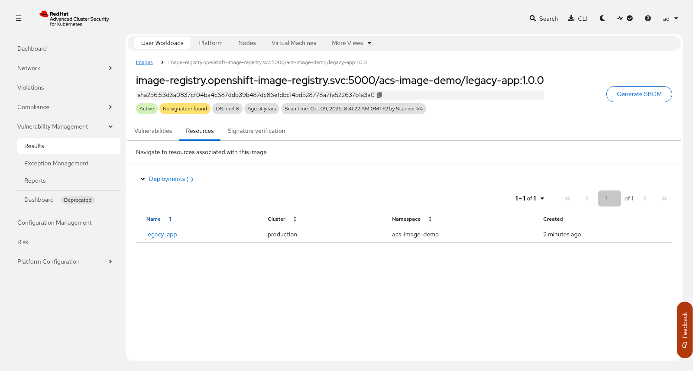
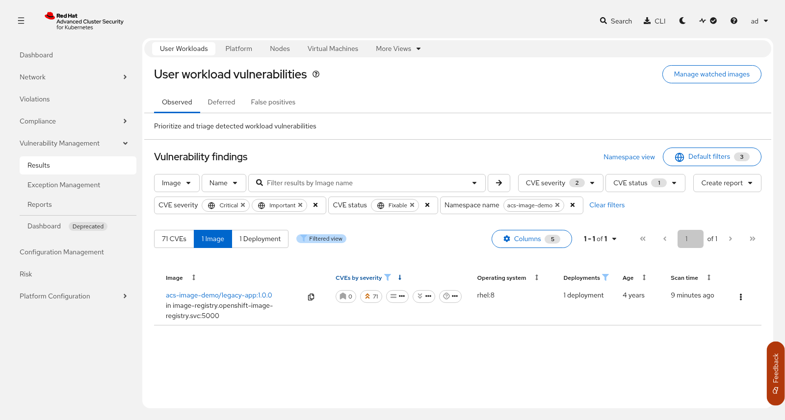
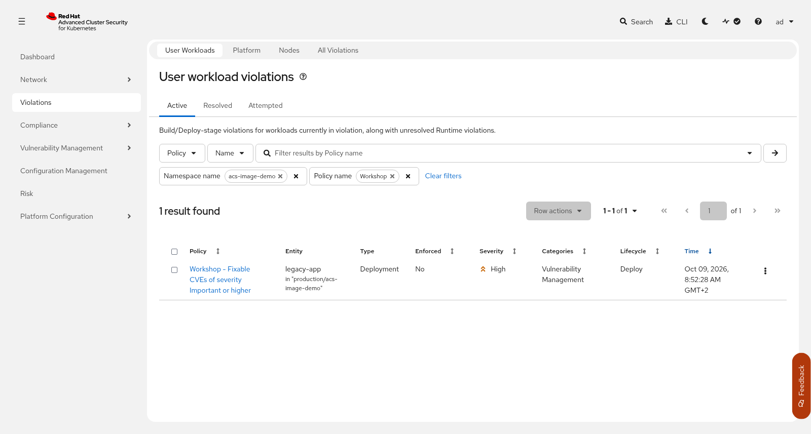

RHACS Image Security Workshop
Before you write rules about images, you need to know which images run, which version and build each one is, and which of their vulnerabilities have a fix. In this step you publish two versions of a small application in the cluster’s internal registry: legacy-app:1.0.0, built on an old UBI 8.4 image, and current-app:2.0.0, built today on the current UBI 9 minimal image. You deploy both, trace each version tag back to the Red Hat build behind it, search the whole cluster by tag and image age, read the CVEs in the portal and with roxctl, and add a first policy that flags fixable CVEs of severity Important or higher. The policy only reports for now. Step 2 turns it into a block.
Prerequisites
-
Cluster Setup completed, including the scanner check
-
source myenv.shrun in your current shell, soCURRENT_IMAGE,ACS_CLUSTER_NAME,ACS_CENTRAL_ROUTE, andROX_API_TOKENare set -
roxctlavailable in the repository root
How it works
An image has three names. The tag (1.0.0) is a label that someone can move to a new build. The digest (sha256:…) is computed from the content and always names the same image. Red Hat images also carry version and release labels inside the image, which name the Red Hat build it was made from. OpenShift records the digest of every running container, and ACS stores every image by digest, together with its labels, creation date, and scan results.
Sensor watches the workloads on the cluster and sends their image references to Central. Central has the images scanned, stores the result by digest, and evaluates every policy whose scope matches the workload. A violation appears when a workload matches all the criteria in one policy section. The policy you add in this step is a Kubernetes SecurityPolicy custom resource that the RHACS config-controller copies into Central.
Steps to apply
1. Publish the two application versions
~35 seconds (the in-cluster build of current-app:2.0.0)
What: Create the acs-image-demo namespace and the two image tags legacy-app:1.0.0 and current-app:2.0.0 in the internal registry.
Why: Applications are deployed by their own version, not by the name of a base image, so the rest of the workshop works with version tags in the x.y.z format.
01-inventory-cve/02-images.yaml holds two ImageStream resources and one BuildConfig:
-
legacy-app:1.0.0points to one Red Hat UBI 8.4 build from October 2021, pinned by digest. OpenShift imports it into the internal registry. -
current-app:2.0.0is built in the cluster. The build starts from the current UBI 9 minimal image (CURRENT_IMAGE, a digest) and installs every package update that the base image does not include yet.
The file uses ${CURRENT_IMAGE}, so it goes through envsubst:
oc --context hub apply -f 01-inventory-cve/01-namespace.yaml
envsubst < 01-inventory-cve/02-images.yaml | oc --context hub apply -f -
oc --context hub start-build current-app -n acs-image-demo --wait
oc tag <source-image> <imagestream>:<tag> creates the same kind of tag from the command line, for example:
oc --context hub tag --reference-policy=local registry.access.redhat.com/ubi8/ubi@sha256:53d3a0837cf04ba4c687ddb39b487dc86efdbc14bd528778a7fa522637b1a3a0 acs-image-demo/legacy-app:1.0.0
|
Verify: Both version tags exist
oc --context hub get istag -n acs-image-demoNAME IMAGE REFERENCE UPDATED
current-app:2.0.0 image-registry.openshift-image-registry.svc:5000/acs-image-demo/current-app@sha256:d11758c5fdeb3046b0277f8ba7fd729bd8cb744d2512eabe0595a55e91963afd 3 seconds ago
legacy-app:1.0.0 image-registry.openshift-image-registry.svc:5000/acs-image-demo/legacy-app@sha256:53d3a0837cf04ba4c687ddb39b487dc86efdbc14bd528778a7fa522637b1a3a0 32 seconds agoEach tag resolves to a digest. The digest of current-app:2.0.0 is new, because the build created a new image. The digest of legacy-app:1.0.0 is the digest of the Red Hat image.
2. Deploy the two versions
What: Deploy legacy-app and current-app from their version tags.
Why: Comparing an old build with a current one makes the CVE numbers and the policy results easy to read.
oc --context hub apply -f 01-inventory-cve/03-legacy-app.yaml
oc --context hub apply -f 01-inventory-cve/04-current-app.yaml
oc --context hub wait deploy --all -n acs-image-demo \
--for=condition=Available --timeout=300sBoth deployments set imagePullPolicy: Always. A version tag can be moved to a new build, and with the default policy (IfNotPresent) a node keeps running the build it pulled first under that tag.
Verify: Both workloads are running
oc --context hub get deploy -n acs-image-demoNAME READY UP-TO-DATE AVAILABLE AGE
current-app 1/1 1 1 4s
legacy-app 1/1 1 1 5s3. List what is running
What: Print the image tag and the resolved digest of each running pod, then ask ACS which images it tracks in the namespace.
Why: The tag in the pod spec is what someone asked for. The digest in the pod status is the image that runs, and it is the key under which ACS keeps the scan results.
oc --context hub get pods -n acs-image-demo --field-selector=status.phase=Running \
-o custom-columns='POD:.metadata.name,IMAGE:.spec.containers[0].image,IMAGE_ID:.status.containerStatuses[0].imageID'The --field-selector hides the completed build pod.
curl -skG -H "Authorization: Bearer ${ROX_API_TOKEN}" "https://${ACS_CENTRAL_ROUTE}/v1/images" \
--data-urlencode "query=Namespace:acs-image-demo" \
| jq -r '.images[] | [.name, .created[0:10], .cves, .fixableCves] | @tsv'The ACS list shows each image with its build date, its number of CVEs, and how many of them have a fix.
Verify: Each pod runs a version tag, and ACS has scanned both images
The IMAGE column shows the version tags, and IMAGE_ID shows the digests behind them (registry host shortened to <registry> here):
POD IMAGE IMAGE_ID
current-app-864b5c97f8-8blrv <registry>/acs-image-demo/current-app:2.0.0 <registry>/acs-image-demo/current-app@sha256:d11758c5fdeb...
legacy-app-554b996c89-lplkb <registry>/acs-image-demo/legacy-app:1.0.0 <registry>/acs-image-demo/legacy-app@sha256:53d3a0837cf0...<registry> is image-registry.openshift-image-registry.svc:5000. The ACS query lists the same two images:
image-registry.openshift-image-registry.svc:5000/acs-image-demo/legacy-app:1.0.0 2021-10-26 781 383
image-registry.openshift-image-registry.svc:5000/acs-image-demo/current-app:2.0.0 2026-10-09 129 0Version 1.0.0 is almost five years old and has 383 CVEs with a fix. Version 2.0.0 was built today and has none with a fix. If the ACS list is empty or shows 0 CVEs, Sensor has not reported the workloads yet. Wait 30 seconds and run the curl command again.
4. Find the build behind a version tag
What: Read the name, version, and release labels of each image, from OpenShift and from ACS, and open the image in the ACS portal.
Why: The application version says nothing about the base image. The labels name the Red Hat build each version was made from, so you know which builds to replace when Red Hat publishes a fix.
From OpenShift, the image stream tag carries the image metadata:
for tag in legacy-app:1.0.0 current-app:2.0.0; do
oc --context hub get istag "${tag}" -n acs-image-demo -o json \
| jq -r --arg tag "${tag}" '.image.dockerImageMetadata | [$tag, .Config.Labels.name,
.Config.Labels.version + "-" + .Config.Labels.release, .Created[0:10],
(.Config.Labels["io.openshift.build.name"] // "-")] | @tsv'
doneACS keeps the same labels with the scan of each image:
curl -skG -H "Authorization: Bearer ${ROX_API_TOKEN}" "https://${ACS_CENTRAL_ROUTE}/v1/images" \
--data-urlencode "query=Namespace:acs-image-demo" | jq -r '.images[] | [.id, .name] | @tsv' \
| while IFS=$'\t' read -r id name; do
curl -sk -H "Authorization: Bearer ${ROX_API_TOKEN}" "https://${ACS_CENTRAL_ROUTE}/v1/images/${id}" \
| jq -r --arg app "${name##*/}" '[$app, .metadata.v1.labels.name,
.metadata.v1.labels.version + "-" + .metadata.v1.labels.release, .scan.operatingSystem] | @tsv'
doneIn the ACS portal, go to Vulnerability Management > Results, select the Image view, filter by the namespace acs-image-demo as in sub-step 6, and open acs-image-demo/legacy-app:1.0.0. The header shows the tag, the digest, the operating system, and the age of the image. The Resources tab lists the deployments that run it.

The header says No signature found. Red Hat signs its images under their original name in registry.access.redhat.com, and the copy in the internal registry is a different name. Signature checks are not part of this session.
Verify: Each version maps to one Red Hat build
The OpenShift query prints the tag, the Red Hat image name, the build (version-release), the creation date, and the OpenShift build that made the image:
legacy-app:1.0.0 ubi8 8.4-213 2021-10-26 -
current-app:2.0.0 ubi9/ubi-minimal 9.8-1791279563 2026-10-09 current-app-1The ACS query shows the same builds and the operating system that the scanner found:
current-app:2.0.0 ubi9/ubi-minimal 9.8-1791279563 rhel:9
legacy-app:1.0.0 ubi8 8.4-213 rhel:8current-app:2.0.0 keeps the labels of its base image (9.8-1791279563) but has a creation date of today, because the build added the package updates on top.
5. Search images across the cluster
What: Ask ACS for every deployment on the cluster that uses the latest tag or an image older than 365 days.
Why: The same questions matter outside the workshop namespace, and ACS answers them for every namespace at once.
for q in "Image Tag:latest" "Image Created Time:>365d"; do
echo "== ${q}"
curl -skG -H "Authorization: Bearer ${ROX_API_TOKEN}" "https://${ACS_CENTRAL_ROUTE}/v1/deployments" \
--data-urlencode "query=${q}" | jq -r '.deployments[] | [.namespace, .name] | @tsv' | sort -u
doneThe query syntax is the same as in the search bar of the portal: <field>:<value>, with + between several criteria. Other useful fields are Image Tag, Image Registry, Image OS, and Namespace.
Verify: legacy-app is one of the old images on the cluster
== Image Tag:latest
== Image Created Time:>365d
acs-image-demo legacy-app
keycloak keycloak-pgsql
openshift-lightspeed lightspeed-postgres-server
showroom-<guid> showroomOn the validation cluster no deployment used latest. The other three old images belong to products that came with the cluster. Your list depends on what runs on your cluster.
6. Explore the CVEs in the portal
What: Open the vulnerability results for the acs-image-demo namespace and narrow them to fixable CVEs of severity Critical or Important.
Why: The full CVE list of an old image is long. The fixable, high-severity subset is the list an application team can act on.
In the ACS portal, go to Vulnerability Management > Results. The page User workload vulnerabilities opens on the User Workloads tab, with the default filters CVE severity Critical and Important and CVE status Fixable already set. In the filter bar, select the entity Namespace, keep the attribute Name, type acs-image-demo, and press Enter. The toggle above the table switches between the CVE, Image, and Deployment views of the same findings.

Switch to the CVE view, open one CVE, and expand the image row. The CVE fixed in column names the package version that removes the CVE, and Advisory names the Red Hat erratum that ships it.
Verify: Only version 1.0.0 has fixable Critical or Important CVEs
The filtered view lists 71 CVEs, 1 image (acs-image-demo/legacy-app:1.0.0 in image-registry.openshift-image-registry.svc:5000), and 1 deployment. For the CVE CVE-2018-25032, the expanded row showed the component zlib at version 1.2.11-17.el8, fixed in 0:1.2.11-18.el8_5 by RHSA-2022:1642.
current-app:2.0.0 is not in the list, although it is not free of CVEs. On the validation date it had five Important CVEs and none of them had a fix yet. Unfixed CVEs drop out of a Fixable filter, and they do not match the policy you add in sub-step 8. The base image alone had one more Important CVE, in openssl-libs, with a fix that Red Hat had published but not yet built into UBI 9 minimal. The build in sub-step 1 installed that fix.
|
7. Scan both versions from the CLI
~25 seconds (about 13 seconds per scan through the cluster)
What: Use roxctl image scan to print the Critical and Important CVEs of version 1.0.0 and the severity counts of both versions.
Why: The CLI returns the same data as the portal in a form you can script, which is what a CI pipeline uses later.
Images in the internal registry are scanned through the secured cluster, which has the pull credentials. The --cluster flag sends the scan there:
REG=image-registry.openshift-image-registry.svc:5000/acs-image-demo
roxctl --insecure-skip-tls-verify image scan --cluster "${ACS_CLUSTER_NAME}" \
--image "${REG}/legacy-app:1.0.0" --severity CRITICAL,IMPORTANT --output table | head -20for img in "${REG}/legacy-app:1.0.0" "${REG}/current-app:2.0.0"; do
echo "== ${img##*/}"
roxctl --insecure-skip-tls-verify image scan --cluster "${ACS_CLUSTER_NAME}" \
--image "${img}" --output json | jq -c '.result.summary'
doneWithout --cluster, Central tries to pull the image itself and fails with no matching image registries found, because it has no credentials for the internal registry.
Verify: Version 1.0.0 has far more CVEs than version 2.0.0
The table starts with a summary line, then one row per CVE. Further right, each row also has the fixed version and the advisory (cut on the right here):
Scan results for image: image-registry.openshift-image-registry.svc:5000/acs-image-demo/legacy-app:1.0.0
(TOTAL-COMPONENTS: 53, TOTAL-VULNERABILITIES: 84, LOW: 0, MODERATE: 0, IMPORTANT: 84, CRITICAL: 0)
+----------------------------------------+-------------------+-----------------+-----------+------+------------
| COMPONENT | VERSION | CVE | SEVERITY | CVSS |
+----------------------------------------+-------------------+-----------------+-----------+------+------------
| brotli | 1.0.6-3.el8 | CVE-2025-6176 | IMPORTANT | 7.5 |
+----------------------------------------+-------------------+-----------------+-----------+------+------------The loop prints the severity counts of both versions:
== legacy-app:1.0.0
{"CRITICAL":0,"IMPORTANT":84,"LOW":285,"MODERATE":412,"TOTAL-COMPONENTS":112,"TOTAL-VULNERABILITIES":781}
== current-app:2.0.0
{"CRITICAL":0,"IMPORTANT":5,"LOW":56,"MODERATE":68,"TOTAL-COMPONENTS":37,"TOTAL-VULNERABILITIES":129}The numbers change as Red Hat publishes new CVE data.
8. Apply the CVE policy
What: Create a SecurityPolicy that flags images with a fixable CVE of severity Important or higher in acs-image-demo.
Why: A policy turns the list from the previous sub-steps into a rule that ACS checks continuously, for every new and existing workload in scope.
The policy has no enforcement actions, so ACS reports violations and blocks nothing. It covers the BUILD stage (CLI and CI checks) and the DEPLOY stage (workloads on the cluster). Both criteria sit in one policy section, so a violation needs a CVE that is fixable and at least Important.
oc --context hub apply -f 01-inventory-cve/05-policy-fixable-important-cves.yaml
SecurityPolicy resources always go in the namespace where Central runs (stackrox). The scope field inside the policy decides which workloads it checks.
|
Verify: Central accepted the policy
oc --context hub get securitypolicy workshop-fixable-important-cves -n stackrox \
-o jsonpath='{.status.conditions[?(@.type=="AcceptedByCentral")].status}{"\n"}'True9. Review the violations
What: List the violations of the new policy in the portal and through the API.
Why: The violation names the workload, the CVEs that matched, and the fix, which is what you hand to the team that owns the image.
In the portal, go to Violations. In the filter bar of User workload violations, select the entity Namespace and enter acs-image-demo, then select the entity Policy and enter Workshop. Open the violation for legacy-app and read the matched CVEs.

Without the policy filter, the namespace shows several more violations from built-in ACS policies, such as Fixable Severity at least Important and Red Hat Package Manager in Image.
curl -skG -H "Authorization: Bearer ${ROX_API_TOKEN}" "https://${ACS_CENTRAL_ROUTE}/v1/alerts" \
--data-urlencode "query=Namespace:acs-image-demo" \
| jq -r '.alerts[] | select(.state == "ACTIVE") | select(.policy.name | startswith("Workshop")) | [.policy.name, .deployment.name, .state] | @tsv'Verify: Only legacy-app violates the policy
Workshop - Fixable CVEs of severity Important or higher legacy-app ACTIVE10. Run a build-time check
~10 seconds (the check goes through the cluster)
What: Run roxctl image check against version 1.0.0, print the exit code, and list each violated policy with its failingCheck flag.
Why: This is the same check a CI pipeline runs before it pushes an image. It shows that the policy also applies at build time.
roxctl --insecure-skip-tls-verify image check --cluster "${ACS_CLUSTER_NAME}" \
--image "${REG}/legacy-app:1.0.0" --output json > /tmp/image-check.json
echo "exit code: $?"
jq -r '.results[].violatedPolicies[] | [.name, .severity, .failingCheck] | @tsv' /tmp/image-check.jsonroxctl image check fails, with exit code 1, when a violated policy has the "fail build" enforcement action (failingCheck is true). The workshop policy is listed with false, because it has no enforcement actions yet. You add them in Step 2.
REG is the variable from sub-step 7. The exit code is already 1, because the built-in policy Fixable Severity at least Important ships with the "fail build" action and version 1.0.0 violates it. A pipeline that runs roxctl image check against a default Central fails on this image before you change anything.
Verify: The workshop policy is listed and does not fail the check
exit code: 1
Fixable Severity at least Important HIGH true
Workshop - Fixable CVEs of severity Important or higher HIGH false
90-Day Image Age LOW false
Docker CIS 4.1: Ensure That a User for the Container Has Been Created LOW false
Red Hat Package Manager in Image LOW falseWhat this solves
| Problem | How this step solves it |
|---|---|
Nobody knows which image builds run on the cluster |
Version tags, digests, and the Red Hat |
Old or |
ACS search finds them across the whole cluster by tag and age |
CVE lists are too long to act on |
Filtering to fixable Critical and Important CVEs gives a short list with the fixing package version |
Checking for vulnerable images depends on someone remembering to look |
The CVE policy flags matching workloads continuously, at build time and on the cluster |
What this does NOT solve (yet)
| Remaining problem | Addressed in |
|---|---|
Nobody is notified when a violation appears |
|
Vulnerable, outdated, or untrusted images can still be deployed |
Alternatives considered
| Approach | Notes |
|---|---|
ACS policy as a |
Versioned like any other manifest, and the same file moves to Git in Step 3. |
Policy created in the ACS portal |
Quicker the first time. There is no file to review or version, and the result is harder to reproduce on another Central. |
Clone of the built-in "Fixable Severity at Least Important" policy |
Close to the same rule. Built-in policies cannot be managed as custom resources, so you would clone it first anyway. |
Reset
This returns the cluster to the state at the end of the setup. The policy goes first so that ACS stops evaluating the namespace before the workloads disappear.
# 1. Policy (config-controller removes it from Central)
oc --context hub delete securitypolicy workshop-fixable-important-cves -n stackrox --ignore-not-found
# 2. Workloads and namespace
oc --context hub delete namespace acs-image-demo --ignore-not-found --wait
# 3. Check that Central no longer has workshop policies (expect 0)
curl -sk -H "Authorization: Bearer ${ROX_API_TOKEN}" "https://${ACS_CENTRAL_ROUTE}/v1/policies" \
| jq -r '.policies[].name' | grep -c '^Workshop - '
# 4. Resolve the attempted violations from Step 2 and Step 5 (they outlive the namespace)
for id in $(curl -skG -H "Authorization: Bearer ${ROX_API_TOKEN}" "https://${ACS_CENTRAL_ROUTE}/v1/alerts" \
--data-urlencode "query=Violation State:ATTEMPTED" \
| jq -r '.alerts[] | select(.policy.name | startswith("Workshop")) | .id'); do
curl -sk -o /dev/null -H "Authorization: Bearer ${ROX_API_TOKEN}" -X PATCH \
"https://${ACS_CENTRAL_ROUTE}/v1/alerts/${id}/resolve" -d '{}'
doneCentral keeps a violation with the state Attempted for every request the admission controller rejected, even after the namespace is gone. The last command resolves them, so that a new run starts with an empty violation list.